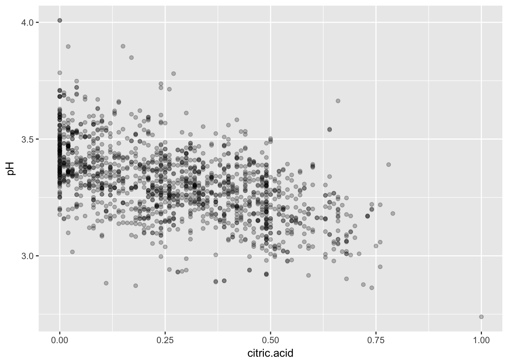

Explore Red Wine Data
- 1 Introduction
- 2 Univariate Exploration
- 3 Univariate Analysis
- 4 Bivariate Exploration Part I
- 4.1 Quality vs Fixed Acidity
- 4.2 Quality vs Volatile Acidity
- 4.3 Quality vs Citric Acid
- 4.4 Quality vs Residual Sugar
- 4.5 Quality vs Chlorides
- 4.6 Quality vs Free Sulfur Dioxide
- 4.7 Quality vs Total Sulfur Dioxide
- 4.8 Quality vs Density
- 4.9 Quality vs pH
- 4.10 Quality vs Sulphates
- 4.11 Quality vs Alcohol
- 5 Bivariate Exploration Part II
1 Introduction
In this report, I will explore the red wine dataset. First, I will look at each individual attribute of this dataset and plot its distribution. Second, I will look at two attributes at a time to explore 1) how each input attribute is related to the output attribute–quality; 2) interesting pairs of input attributes. Third, I will examine three attributes by adding one additional attribute to some of the interesting two-attribute pairs. Finally, I will summarize the successes and problems I encounter during the data exploration process.
# Load all of the packages in this code chunk.
library(ggplot2)
library(corrplot)# Load the Data
wine_reds = read.csv('wineQualityReds.csv', row.names = 1)2 Univariate Exploration
In this section, I will first look at the structure of the data set. Then I will examine the distribution of each attribute individually by plotting its distribution.
dim(wine_reds)## [1] 1599 12# Convert quality into ordered categorical variable
wine_reds$quality <- ordered(wine_reds$quality)
str(wine_reds)## 'data.frame': 1599 obs. of 12 variables:
## $ fixed.acidity : num 7.4 7.8 7.8 11.2 7.4 7.4 7.9 7.3 7.8 7.5 ...
## $ volatile.acidity : num 0.7 0.88 0.76 0.28 0.7 0.66 0.6 0.65 0.58 0.5 ...
## $ citric.acid : num 0 0 0.04 0.56 0 0 0.06 0 0.02 0.36 ...
## $ residual.sugar : num 1.9 2.6 2.3 1.9 1.9 1.8 1.6 1.2 2 6.1 ...
## $ chlorides : num 0.076 0.098 0.092 0.075 0.076 0.075 0.069 0.065 0.073 0.071 ...
## $ free.sulfur.dioxide : num 11 25 15 17 11 13 15 15 9 17 ...
## $ total.sulfur.dioxide: num 34 67 54 60 34 40 59 21 18 102 ...
## $ density : num 0.998 0.997 0.997 0.998 0.998 ...
## $ pH : num 3.51 3.2 3.26 3.16 3.51 3.51 3.3 3.39 3.36 3.35 ...
## $ sulphates : num 0.56 0.68 0.65 0.58 0.56 0.56 0.46 0.47 0.57 0.8 ...
## $ alcohol : num 9.4 9.8 9.8 9.8 9.4 9.4 9.4 10 9.5 10.5 ...
## $ quality : Ord.factor w/ 6 levels "3"<"4"<"5"<"6"<..: 3 3 3 4 3 3 3 5 5 3 ...summary(wine_reds)## fixed.acidity volatile.acidity citric.acid residual.sugar
## Min. : 4.60 Min. :0.1200 Min. :0.000 Min. : 0.900
## 1st Qu.: 7.10 1st Qu.:0.3900 1st Qu.:0.090 1st Qu.: 1.900
## Median : 7.90 Median :0.5200 Median :0.260 Median : 2.200
## Mean : 8.32 Mean :0.5278 Mean :0.271 Mean : 2.539
## 3rd Qu.: 9.20 3rd Qu.:0.6400 3rd Qu.:0.420 3rd Qu.: 2.600
## Max. :15.90 Max. :1.5800 Max. :1.000 Max. :15.500
## chlorides free.sulfur.dioxide total.sulfur.dioxide
## Min. :0.01200 Min. : 1.00 Min. : 6.00
## 1st Qu.:0.07000 1st Qu.: 7.00 1st Qu.: 22.00
## Median :0.07900 Median :14.00 Median : 38.00
## Mean :0.08747 Mean :15.87 Mean : 46.47
## 3rd Qu.:0.09000 3rd Qu.:21.00 3rd Qu.: 62.00
## Max. :0.61100 Max. :72.00 Max. :289.00
## density pH sulphates alcohol quality
## Min. :0.9901 Min. :2.740 Min. :0.3300 Min. : 8.40 3: 10
## 1st Qu.:0.9956 1st Qu.:3.210 1st Qu.:0.5500 1st Qu.: 9.50 4: 53
## Median :0.9968 Median :3.310 Median :0.6200 Median :10.20 5:681
## Mean :0.9967 Mean :3.311 Mean :0.6581 Mean :10.42 6:638
## 3rd Qu.:0.9978 3rd Qu.:3.400 3rd Qu.:0.7300 3rd Qu.:11.10 7:199
## Max. :1.0037 Max. :4.010 Max. :2.0000 Max. :14.90 8: 18The red wine dataset contains 12 variables–11 input numerical variables based on physicochemical tests and 1 categorical output variable (quality) based on sensory data, with 1599 observations.
# Function to plot histogram of a single variable
plot_uni_var <- function(variable, bins = 50) {
return (ggplot(aes_string(x = variable), data = wine_reds) +
geom_histogram(bins = bins))
}2.1 Quality
ggplot(aes(x = quality), data = wine_reds) +
geom_bar()Out of the possible quality scores between 0 and 10, all of our red wines’ quality scores fall between 3 and 8. The dataset is not well balanced. Majority of red wines have a quality score of either 5 or 6. I am curious about what attributes make a wine earn a low quality score (quality = 3) or a high quality score (quality = 8).
2.2 Fixed Acidity
Most acids involved with wine are fixed or nonvolatile (do not evaporate readily).
plot_uni_var('fixed.acidity')plot_uni_var('fixed.acidity') + scale_x_log10()Fixed acidity values range between 4 and 16, with most values range between 7 and 9. The distribution is slightly positively skewed. Transforming the x-axis into log scale can make it more normally distributed.
2.3 Volatile Acidity
The amount of acetic acid in wine, which at too high of levels can lead to an unpleasant, vinegar taste.
plot_uni_var('volatile.acidity')plot_uni_var('volatile.acidity') + scale_x_continuous(limits = c(0, 1))## Warning: Removed 21 rows containing non-finite values (stat_bin).Fixed acidity values range between 0.1 and 1.6, with most values range between 0.3 and 0.7. The distribution is slightly positively skewed. When zoom in to values below 1, the distribution seems normal.
2.4 Citric Acid
Found in small quantities, citric acid can add ‘freshness’ and flavor to wines.
plot_uni_var('citric.acid')
# number of red wines with citric acid = 0
dim(wine_reds[wine_reds$citric.acid ==0, ])[1]## [1] 132Citric acid values range between 0 and 1 with most values below 0.6. There are 132 red wines in our data set with no detectable citric acid concentration.
2.5 Residual Sugar
The amount of sugar remaining after fermentation stops, it is rare to find wines with less than 1 gram/liter and wines with greater than 45 grams/liter are considered sweet.
plot_uni_var('residual.sugar')plot_uni_var('residual.sugar') + scale_x_continuous(limits = c(0, 5))## Warning: Removed 84 rows containing non-finite values (stat_bin).Most residual sugar values range between 1.5 and 2.5. There are a few outliers with large values. When zoom in and look at values below 5, the distribution appears normal.
2.6 Chlorides
The amount of salt in the wine.
plot_uni_var('chlorides')plot_uni_var('chlorides') + scale_x_continuous(limits = c(0, 0.2))## Warning: Removed 41 rows containing non-finite values (stat_bin).Most chlorides values range between 0.05 to 0.1. There are a few outliers with large values. When zoom in and look at values below 0.2, the distribution appears normal.
2.7 Free Sulfur Dioxide
The free form of SO2 exists in equilibrium between molecular SO2 (as a dissolved gas) and bisulfite ion; it prevents microbial growth and the oxidation of wine.
plot_uni_var('free.sulfur.dioxide')The distribution of free sulfur dioxide is highly positively skewed.
2.8 Total Sulfur Dioxide
The amount of free and bound forms of S02; in low concentrations, SO2 is mostly undetectable in wine, but at free SO2 concentrations over 50 ppm, SO2 becomes evident in the nose and taste of wine.
plot_uni_var('total.sulfur.dioxide')plot_uni_var('total.sulfur.dioxide') + scale_x_log10()The distribution of total sulfur dioxide is higly positively skewed. And there are a few outliers with very large values. Transforming the x-axis into log scale can make it more normally distributed.
2.9 Density
The density of wine is close to that of water depending on the percent alcohol and sugar content.
plot_uni_var('density')Density values range between 0.990 and 1.004 with most values range from 0.995 and 0.998. The distribution of density values are symmetrical centered around 0.9965.
2.10 pH
Describes how acidic or basic a wine is on a scale from 0 (very acidic) to 14 (very basic); most wines are between 3-4 on the pH scale.
plot_uni_var('pH')Most pH values range between 3.15 and 3.45. The distribution of pH is symmetrical centered around 3.3.
2.11 Sulphates
A wine additive which can contribute to sulfur dioxide gas (S02) levels, wich acts as an antimicrobial and antioxidant.
plot_uni_var('sulphates')plot_uni_var('sulphates') + scale_x_log10()Most sulphates values range between 0.5 and 0.75. The distribution is positively skewed. There are a few ourliers with large sulphates values. Transforming the x-axis into log scale can make it more normally distributed.
2.12 Alcohol
The percent alcohol content of the wine
plot_uni_var('alcohol')The alcohol values range between 8.5 and 15. The distribution of alcohol value is positively skewed.
3 Univariate Analysis
What is the structure of your dataset?
There are 12 attributes in the dataset. 11 of them (fixed acidity, volatile acidity, citric acid, residual sugar, chlorides, free sulfur dioxide, total sulfur dioxide, density, pH, sulphates, alcohol) are input attributes based on physicochemical tests. The other attribute (quality) is the output attribute based on sensory data. Each row corresponds to one particular wine with total 1599 different red wines in the data set.
What is/are the main feature(s) of interest in your dataset?
The main feature of interest is the output attribute quality. I am trying to figure out which of the 11 input attribute contribute to a high quality value.
What other features in the dataset do you think will help support your investigation into your feature(s) of interest?
The 11 input attributes are equally likely to contribute to the quality value at this point. I will look more closely at how each of the attributes is distributed with a given quality value in the bivariate exploration section.
Did you create any new variables from existing variables in the dataset?
No.
Of the features you investigated, were there any unusual distributions? Did you perform any operations on the data to tidy, adjust, or change the form of the data? If so, why did you do this?
The possible quality values are from 0 to 10, but our data set only has quality values from 3 to 8, which means there are no extremely bad red wines or extrememly good wines in out data set. The vast majority of red wines in the data set has a quality value either 5 or 6, with very fewer wines with quality values 3, 4, 7 or 8, which makes the data set unbalanced.
4 Bivariate Exploration Part I
In this section, I will look at how each input attribute is related to the output quanlity variable.
# Function to plot boxplot of variable grouped by quality
plot_quality_vs_var <- function(variable) {
# Uncomment the next line to print a summary of variable grouped by quality values
# print (by(wine_reds[[variable]], wine_reds$quality, summary))
return (ggplot(aes_string(x = 'quality', y = variable), data = wine_reds) +
geom_boxplot())
}4.1 Quality vs Fixed Acidity
plot_quality_vs_var('fixed.acidity')There isn’t a clear trend between fixed acidity and quality.
4.2 Quality vs Volatile Acidity
plot_quality_vs_var('volatile.acidity')The higher the quality, the lower the volatile acidity.
4.3 Quality vs Citric Acid
plot_quality_vs_var('citric.acid')The higher the quality, the higher the citric acid.
4.4 Quality vs Residual Sugar
plot_quality_vs_var('residual.sugar')There isn’t a clear trend between residual sugar and quality.
4.5 Quality vs Chlorides
plot_quality_vs_var('chlorides')plot_quality_vs_var('chlorides') + scale_y_continuous(limits = c(0.05, 0.15))## Warning: Removed 117 rows containing non-finite values (stat_boxplot).After zoom in, one can see the higher the quality, the lower the chlorides.
4.6 Quality vs Free Sulfur Dioxide
plot_quality_vs_var('free.sulfur.dioxide')There isn’t a clear trend between free sulfur dioxide and quality.
4.7 Quality vs Total Sulfur Dioxide
plot_quality_vs_var('total.sulfur.dioxide')There isn’t a clear trend between total sulfur dioxide and quality.
4.8 Quality vs Density
plot_quality_vs_var('density')The higher the quality, the lower the density.
4.9 Quality vs pH
plot_quality_vs_var('pH')The higher the quality, the lower the pH.
4.10 Quality vs Sulphates
plot_quality_vs_var('sulphates')The higher the quality, the higher the sulphates.
4.11 Quality vs Alcohol
plot_quality_vs_var('alcohol')The higher the quality, the higher the alcohol.
5 Bivariate Exploration Part II
In this section, I will first plot the correlation matrix to find out if there are any interesting pairs of input attributes that look interesting. Then I will examine these pairs.
5.1 Correlation Matrix
cor_matrix <- cor(wine_reds[, 1:11])
corrplot(cor_matrix, type = 'lower')There are a few pairs of input variables deserve further examing from the correlation matrix plot: fixed acidity vs citric acid, fixed acidity vs density, fixed acidity vs pH, volatile acidity vs citric acid, citric acid vs pH, total sulfur dioxide vs free sulfur dioxide, density vs alcohol.
# Function to plot scatter plot of variable2 vs variable1
plot_bi_var <- function(variable1, variable2) {
return (ggplot(aes_string(x = variable1, y = variable2), data = wine_reds) +
geom_point(alpha = 1/4, position = position_jitter(width = 0)))
}5.2 Fixed Acidity vs Citric Acid
plot_bi_var('citric.acid', 'fixed.acidity')cor(wine_reds$citric.acid, wine_reds$fixed.acidity)## [1] 0.6717034Fixed acidity and citric acid have a correlation coefficient of 0.6717034. This is probably because citric acid is also a kind of fixed acidity.
5.3 Volatile Acidity vs Citric Acid
plot_bi_var('citric.acid', 'volatile.acidity')cor(wine_reds$citric.acid, wine_reds$volatile.acidity)## [1] -0.5524957Volatile acidity and citric acid have a correlation coefficient of -0.5524957. I cannot think of an explaination for this correlation.
5.4 pH vs log10(Fixed Acidity)
plot_bi_var('log10(fixed.acidity)', 'pH')cor(log10(wine_reds$fixed.acidity), wine_reds$pH)## [1] -0.7063602The pH scale is logarithmic, so I first transform fixed acidity into log10(fixed acidity). log10(fixed acidity) and pH have a correlation coefficient of -0.7063602. This is because hihger fixed acidity concentration leads to lower pH values.
5.5 pH vs Citric Acid
plot_bi_var('citric.acid', 'pH')
cor(wine_reds$citric.acid, wine_reds$pH)## [1] -0.5419041Citric acid and pH have a correlation coefficient of -0.5419041. Because we have 132 wines with 0 citric acid values, we cannot perform a logarithmic transfrom here. The correaltion is due to citric acid is non volatile, therefore higher citiric acid concentration leads to lower pH value.
5.6 Total Sulfur Dioxide vs Free Sulfur Dioxide
plot_bi_var('free.sulfur.dioxide', 'total.sulfur.dioxide') + geom_abline(slope=1)cor(wine_reds$free.sulfur.dioxide, wine_reds$total.sulfur.dioxide)## [1] 0.6676665Total sulfur dioxide and free sulfur dioxide have a correlation coefficient of 0.6676665. This is because free sulfur dioxide is part of total sulfur dioxide, and this can also be seen from all the points are above the y=x line.
5.7 Density vs Alcohol
plot_bi_var('alcohol', 'density')cor(wine_reds$alcohol, wine_reds$density)## [1] -0.4961798Density and alcohol have a correlation coefficient of -0.4961798. This is probably because alcohol has a lower density comparing to water. Therefore, the higher concentration of alcohol, the lower the wine density is.
5.8 Density vs Fixed Acidity
plot_bi_var('fixed.acidity', 'density')cor(wine_reds$fixed.acidity, wine_reds$density)## [1] 0.6680473Densidy and fixed acidity have a correlation coefficient of 0.6680473. This is probably because fixed acidity in wine is mainly tartaric acid, and tartaric acid has a density of 1.79 g/mL, which is greater than the wine’s main component–water. Therefore, higher concentration of fixed acidity leads to higher density value.